The Aswang is a vampiric creature heavily empowered by the death of players. Every time it successfully kills a hunter during a match, its movement speed permanently increases, making it exponentially deadlier over time. To counter this aggressive snowball effect, players must lay down lines of salt, which actively slow the Aswang down when walked through.
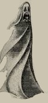
The Banshee acts as a loud harbinger of doom, interacting intensely with fragile environments. It is known to target and shatter multiple panes of glass, mirrors, or light bulbs at once when navigating a map. Crucially, it can emit a highly distinctive, mourning wail right at the beginning of a hunt, giving players an immediate audio cue to identify it.
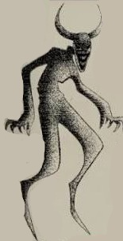
The Demon stands out as an incredibly hostile threat that targets players even at exceptionally high energy levels. It possesses an incredibly fast hunt frequency, meaning it can chain hunts back-to-back with minimal cooldown time. To aid in survival, the protective Cross item has an expanded range against this entity and will uniquely cause the Demon to float or spin in place while burning.
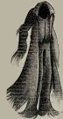
The Dullahan functions as a terrifying headless horseman that relies heavily on direct sightlines to kill. Its core hunting mechanic causes it to steadily gain movement speed the longer it maintains an uninterrupted line of sight with a player. Hunters can easily identify this ghost by pulling out a photo camera; it will uniquely appear entirely headless in captured photographs.
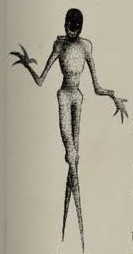
The Dybbuk is a malicious entity that interacts aggressively with dead players and physics. It has the unique ability to hurl or launch dead player corpses through the air outside of hunts. Its primary weakness lies in its vulnerability to cursed music items; activating a Music Box will instantly stun the Dybbuk in place while the melody plays.
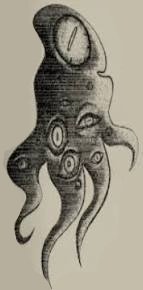
The Entity is a highly dynamic threat that breaks standard positioning rules by utilizing short-range teleportation. It can instantly teleport across different rooms on a job site to confuse investigators. Furthermore, when it interacts with furniture or objects, it teleports them directly to its current location, leaving behind a signature coloured smoke trail.

The Ghoul is a loud, chaotic ghost type that is uniquely agitated by player activity and communication. It becomes heavily enraged and initiates immediate hunts if players talk too much, type rapidly in chat, or spam queries into the Spirit Box. However, its distinct electronic weakness prevents it from shorting out lights or disabling gear during a hunt.
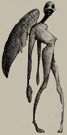
The Keres acts as an angel of death that actively preys upon the weak. It possesses a targeting mechanic that forces it to track down and chase the specific hunter currently holding the lowest energy levels. Despite this predatory nature, it has a notable fallback trait where its overall movement speed drops by 10% after securing a kill.
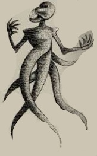
The Leviathan is a highly active spirit capable of throwing multiple environmental objects at the exact same time. Unlike most ghosts that suffer a strict action cooldown, its item throws can overlap, which triggers a distinctive laser-like "zing" audio cue. It is also the only ghost type in the game capable of flipping light switches completely off outside of active hunts.

The Nightmare preys entirely on the senses by inducing complex auditory and environmental hallucinations. It can trick players by projecting fake broken glass noises or lowering room temperatures across non-ghost rooms to mask its true location. It deals much better with total darkness, receiving a massive spike in hunt frequency if players leave its room dark.

The Oni is widely feared as one of the fastest passively moving threats in the game. During active hunts, it continuously sprints at maximum speed, producing exceptionally fast, heavy footstep sounds that warn players not to loop it. Outside of hunts, it exhibits a high manifestation rate, frequently showing its physical model to players.
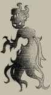
The Phantom behaves as an ethereal apparition that alters standard hunt visibility mechanics. While pursuing players, it blinks back and forth between a visible state and an invisible state at a much slower rate than typical ghosts. This makes it harder to track visually, especially because it moves significantly faster while it is completely invisible.
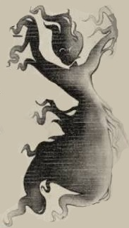
A Ravager is a violent manifestation that uses their environment as a weapon. Ravagers announce themselves through destruction. Overturned furniture, thrown objects, and sudden bursts of chaotic movement. Ravagers can throw multiple objects at once. All abilities leave EMF level 5.

The Revenant is a vengeful, relentless entity built purely to terrorize groups in rapid succession. It possesses an incredibly low hunt cooldown, giving survivors virtually no time to rest or gather evidence between aggressive phases. Its single saving grace is that if it manages to successfully kill a hunter, its active hunt instantly cuts short.
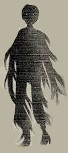
The Shadow is a passive and incredibly timid entity that completely avoids human contact. It prefers to reside in absolute darkness, meaning its physical and supernatural activity drops off significantly in well-lit rooms. Because it blends so deeply with its surroundings, it barely changes environmental temperatures, making thermometer readings oddly high.

The Siren acts as a deceptive manipulator of player movement and standard equipment. Any hunter that gets caught in the direct line of sight of a Siren during a hunt will have their movement speed forcefully reduced, making escape difficult. Additionally, it interacts uniquely with the Spirit Box by emitting an eerie humming sound rather than a vocal response.
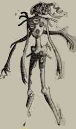
The Skinwalker is an extremely deceptive shape-shifter that roams away from its favorite room to mimic other entities. It can actively steal and use the signature passive traits of other ghosts—such as throwing objects like a Leviathan or wailing like a Banshee. To make matters worse, it can project entirely fake Ghost Orbs to trick players into choosing the wrong identity.

The Specter is a highly territorial, localized ghost that is deeply bound to its favorite room. It will almost never roam or leave its room outside of hunts, often appearing completely stationary on scanning equipment. While it completely lacks aggressive hunt modifiers, it compensates by throwing surrounding objects around its room at a high rate.
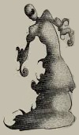
The Spirit is an elemental entity with zero prominent tracking advantages or aggressive hunt strengths. Its primary mechanical identity revolves entirely around its ability to manipulate nearby open fire sources. It can interact with lit candles left by hunters, shifting the color of the flames to completely negate the candle's ability to reduce passive energy drain.

The Wisp is a swamp-born spirit with a heavy physical affinity for open fire and light sources. It can passively walk directly through ignited lines of Holy Oil, catching fire visually while completely ignoring the barrier. While it can roam freely, it always teleports back to its favorite room to begin an active hunt, and it can secretly relight blown-out candles.
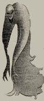
The Umbra is a weightless, shadow-born entity that moves around job sites like a silent predator. Because it is as light as air, it produces absolutely no footstep audio cues whatsoever while actively hunting down players. To balance this extreme stealth advantage, passing through well-lit rooms drastically drains its momentum and slows its movement speed.
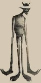
Vespers are the malignant lingering souls of creatures living in complete darkness. They've evolved to rely on soley on their auditory senses, a sort of echolocation, making them adept hunters despite lacking ocular vision of any kind. Vespers rely solely on sound to hunt. They can track through walls.
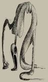
The Vex is an anomalous entity that completely bypasses physical boundaries and scanning tools. It possesses a passive phase ability that allows it to float straight through solid doors and walls during hunts to cut off fleeing players. Furthermore, it remains entirely invisible to LIDAR map scanners, yielding zero red dots or spatial tracking points.

The Wendigo is a monstrous, malformed entity that grows much stronger as a match turns sour. Its movement speed steadily escalates based on the decreasing energy levels of the hunters present around it. Despite its sheer power during hunts, it is deeply afraid of fire and cannot initiate a hunt if it is close to open flames.

The Wraith targets human sanity and energy levels at a highly accelerated rate. Merely standing inside a job site haunted by a Wraith drains player energy significantly faster than any other ghost type in the game. Its fatal identifying flaw is that it hovers off the floor; if it walks over a line of salt, it triggers no physical disturbance.